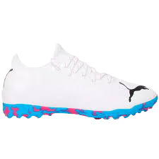

HOJE APRESENTAMOS A VOCÊS O MAIS NOVO MODELO DA PUMA, CRIADO POR DOIS GAROTOS DE 18 E 16 ANOS NO QUAL PROMETE REVOLUCIONAR O ESPORTE BRETÃO...
 |
NOVO MODELO DA PUMA, A CHUTEIRA MAIS REVOLUCIONARIA DA HISTÓRIA. |
|
ELA VEM COM A MAIS NOVA TECNOLOGIA NA QUAL APELIDAMOS CARINHOSAMENTE DE Puma Ultra Next Generation. A Puma Ultra Next Generation vem com a tecnologia onde consiste em você conseguir remover a suas travas da chuteira quando for jogar fustal, e colocar de volta quando for jogar em campo. |
 |